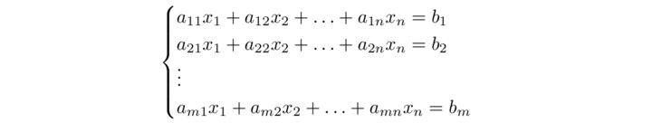
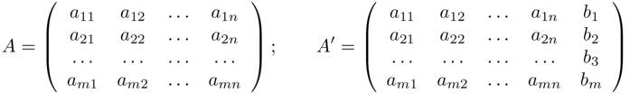

Sistemi generali - Teorema di Rouché Capelli
Consideriamo il sistema
 4.3
costiutio da m equazioni in n incognite. Sia A la matrice (m,n) dei coefficienti del sistema. Pensando di fissare in ℝn e ℝm le rispettive basi canoniche, sia L: ℝn → ℝm la trasformazione lineare rappresentata da A. Il sistema lineare può dunque riscriversi nella forma
L(x) = b
o anche
Ax = b
con x ∈ ℝn, b ∈ ℝm. Risolvere il sistema significa trovare quali vettori x ∈ ℝn hanno come immagine attraverso L il vettore b ∈ ℝm. Vale la seguente proposizione
Proposizione C.0 Sia Ax=b un sistema lineare in m equazioni ed n incognite, e siano A1,..., An, ∈ ℝn le colonne dei coefficienti. Allora il sistema è compatibile se e solo se b ∈ Span(A1,..., An).
Dimostrazione - Il sistema si può scrivere come
x1 A1 + ... + xnAn = b
I vettori A1,..., An sono linearmente indipendti per ipotesi, formano quindi una base di 𝕂n. Allora ogni vettore B presenta un'unica espressione, come combinazione lineare:
Quindi ili sistema è compatibile se e solo se b è combinazione delle colonne della matrice dei coefficienti, cioè se e solo se b ∈ Span(A1,..., An).□
Dato il sistema (4.3) consideriamo le due matrici:
Sia A la matrice dei coefficienti del sistema e A' la matrice ottenuta oralndo la matrice A con la colonna dei termini noti. La matrice A' si dice completa mentre la matrice A è chiamata incompleta del sistema lineare. Vale il seguente teorema.
Teorema di Rouchè-Capelli - Il sistema (4.3) ha soluzione solo se la matrice A e la matrice A' hanno lo stesso rango. Inoltre la soluzione, se esiste, è unica se e solo se rg A = n
Dimostrazione - Grazie alla proposizione C.0 sappiamo che la soluzione esiste se e solo se b ∈ Span(A1,..., An), che è equivalente a richiedere
Span(A1,..., An) = Span(A1,..., An,b). (4.4)
Ma il primo Span è l'immagine di LA mentre il secondo l'immagine di LA'. Siccome si ha sempre
Span(A1,..., An) ⊆ Span(A1,..., An,b) ⇔ rg A = rg A'
L'uguaglianza (4.4) vale quindi se e solo se rg A = rg A'. L'unicità vale se e solo se Ker LA = {0}, il che accade se e solo se rg A = dim ℝn = n. □
Osserviamo che se il sistema è omogeneo (b = 0) la condizione rango di A = rango di A' è sempre soddisfatta.
Teorema di Struttura - Sia x0 una soluzione del sistema omogeneo Ax = 0, e x1 una soluzione del sistema non omogeneo Ax =b. Allora anche x0 + x1 è soluzione del sistema non omogeneo, infatti:
A (x1 + x0) = b0 + 0 = b
Se det A = 0, e Ax = b ha una soluzione, allora ne ha infinite. In altre parole quando det A = 0 per il sistema non omogeneo, viene a cadere o l'esistenza o l'unicità della soluzione.